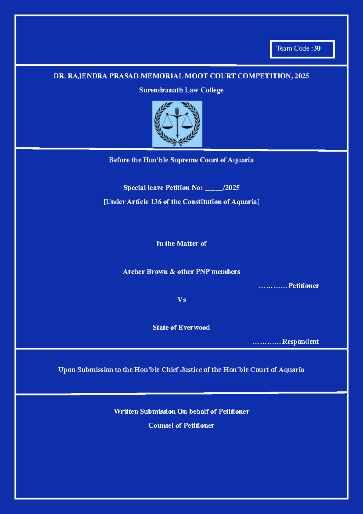

Advancing Legal & Forensic Excellence
Bridging Law, Medicine & Practical Training
About the Institution
Medico Legal Jurists is an advanced academic and professional platform designed to bridge the disciplines of law, forensic science, and policy. The institution aims to foster interdisciplinary excellence by integrating theoretical knowledge with practical legal training, thereby preparing future jurists for complex legal challenges in a technologically evolving world.
Academic Divisions

📚 Notes
Structured semester-wise academic material

📝 Assignments
Professional drafting & academic assistance

⚖️ Memorials
Moot court research & memorial drafting
Forensic & Legal Integration
Forensic Investigation & Evidence Analysis

Digital & Biometric Forensics
Crime Scene Reconstruction
500+
Students Served
1000+
Assignments Delivered
95%
Success Rate